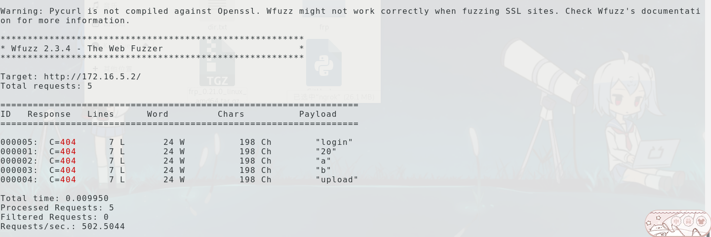

wfuzz工具介绍
wfuzz是一个用来FUZZ的工具,他可以用来查找一个web server中的隐藏的文件和路径，来扩大攻击面。还可以进行用户爆破,sql注入测试,绕过waff等等测试
wfuzz工具基本用法
常用参数
1 | 要FUZZ的参数用FUZZ表示如果有3个就要这样 |
界面介绍

id:代表编号
Response: 代表返回状态码(C=404代表返回404状态码)
Lines: 代表返回的行数
Word: 代表返回的字数
Chars: 代表返回的字符数
payload: 代表发出去的payload
-c参数
下面是一个无-c参数的$ wfuzz -z file,dir.txt --hc 404 http://172.16.5.2/FUZZ
一个有-c参数的wfuzz -c -z file,dir.txt --hc 404 http://172.16.5.2/FUZZ
-z参数
把文件内容当做payloadwfuzz -c -z file,dir.txt http://172.16.5.2/FUZZ
用rang来当做payloadwfuzz -c -z range,10-20 --hc 404 http://172.16.5.2/FUZZ
用list来当做payloadwfuzz -c -z list,20-a-b-upload-login --hc 404 http://172.16.5.2/FUZZ
-d设置POST数据
wfuzz -c -z list,20-a-b-upload-login -d "user=FUZZ" http://172.16.5.2/
-b设置cookie
设置2个cookie,其中一个是user还有一个是passwdwfuzz -c -z list,20-a-b-upload-login -d "user=FUZZ" -b "user=test" -b "passwd=test" http://172.16.5.2/
设置多个cookie要用多个-b
-X参数设置请求方法
wfuzz -c -z list,GET-POST-HEAD -X FUZZ http://172.16.5.2/
-p设置代理
wfuzz -c -z list,20-a-b-upload-login -p 127.0.0.1:SOCKS4,127.0.0.1:SOCKS5 http://172.16.5.2/
-t设置线程
wfuzz -c -z list,20-a-b-upload-login -t 30 http://172.16.5.2/
实用技巧
爆破目录
wfuzz -c -z file,dir.txt --sc 403,200,304 http://172.16.5.2/FUZZ
爆破文件
wfuzz -c -z file,dir.txt --sc 200,304 http://172.16.5.2/FUZZ.php
爆破账号密码
第一种爆破(一个字典对应一个字典)wfuzz -z list,a-b-c-admin -z list,1-2-3-admin -m zip -d "user=FUZZ&password=FUZ2Z" http://172.16.5.96/login/login.php
第二种爆破(一个字典中的一个值直接对应另外一个字典的所有值)wfuzz -z list,a-b-c-admin -z list,1-2-3-admin -d "user=FUZZ&password=FUZ2Z" http://172.16.5.96/login/login.php
保存文件
保存html文件wfuzz -c -z file,dir.txt -f 1,html http://172.16.5.96/FUZZ
对payload加密
wfuzz -z list,a-b-c-admin,base64 -z list,1-2-3-admin -m zip -d "user=FUZZ&password=FUZ2Z" http://172.16.5.96/login/login.php
对cookie进行sql注入测试
wfuzz -z file,MSSQL.fuzz.txt -b "sql=FUZZ" http://172.16.5.96/login/login.php